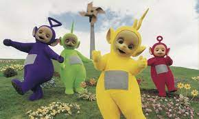

Teletubbies Amarelo
Laa-Laa é a terceira dos Teletubbies, possui uma personalidade
doce e bem humorada sempre disposta a brincar.
Ela costuma cantar e dançar mais ativamente e tem interesse pelo balé. Possui
coloração amarela e sua antena na cabeça é encaracolada.
Seu objeto favorito é uma bola plástica alaranjada
Observações
- Recentemente, Nikky Smedley, que viveu a teletubby amarela Laa-Laa fez uma revelação bizarra. Aos 51 anos, a artista relembrou
que recebeu uma proposta para lá de inconveniente: um homem pediu para fazer sexo enquanto ela usava a roupa da personagem amarela.
- Os "Teletubbies" são quatro criaturinhas coloridas — Tinky Winky, Dipsy, Laa-Laa e Po — que viviam na Teletubbilândia. Cada um era de uma cor
(roxo, verde, amarelo e vermelho, respectivamente) e tinha uma antena de formato diferente em sua cabeça.
-
Há 25 anos, quatro alienígenas coloridos estreavam no programa "Teletubbies", da rede britânica BBC. A atração infantil foi distribuída para
120 países entre 1997 e 2001. No Brasil, a TV Globo exibiu o programa pela primeira vez em 1999, apresentando ao público os amigos
Tinky Winky, Dipsy, Laa-Laa e Po.
